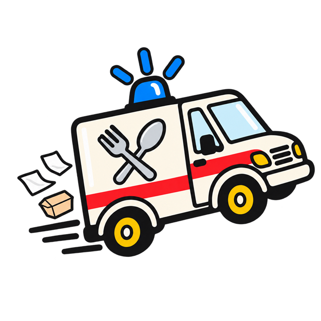
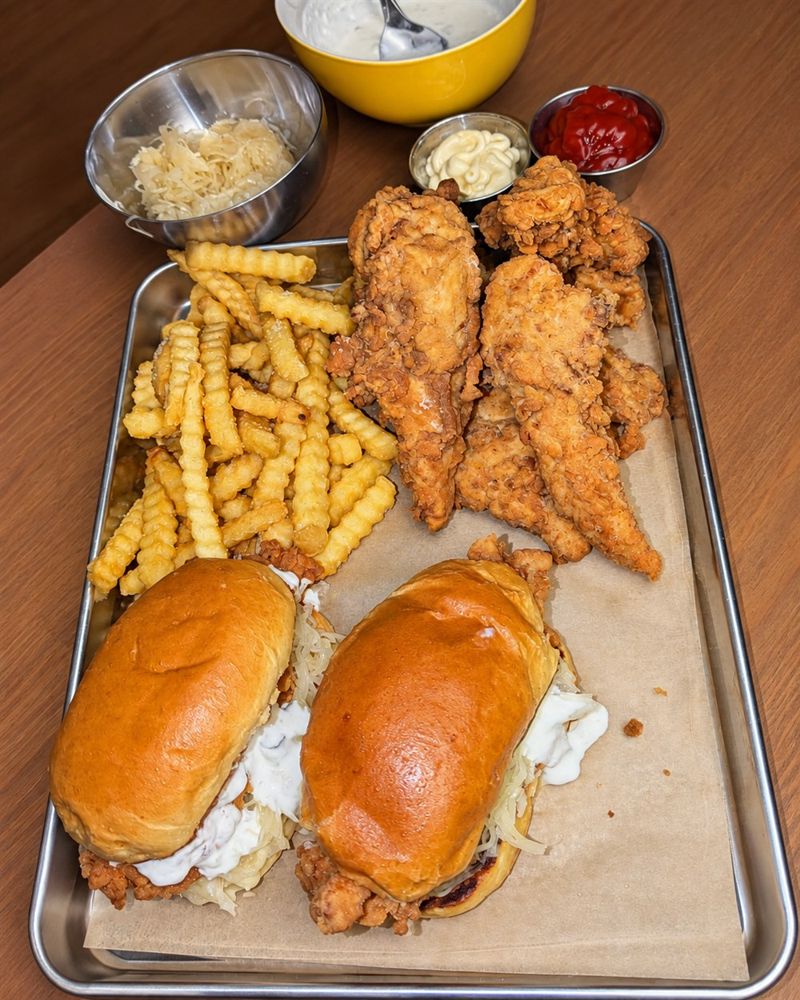
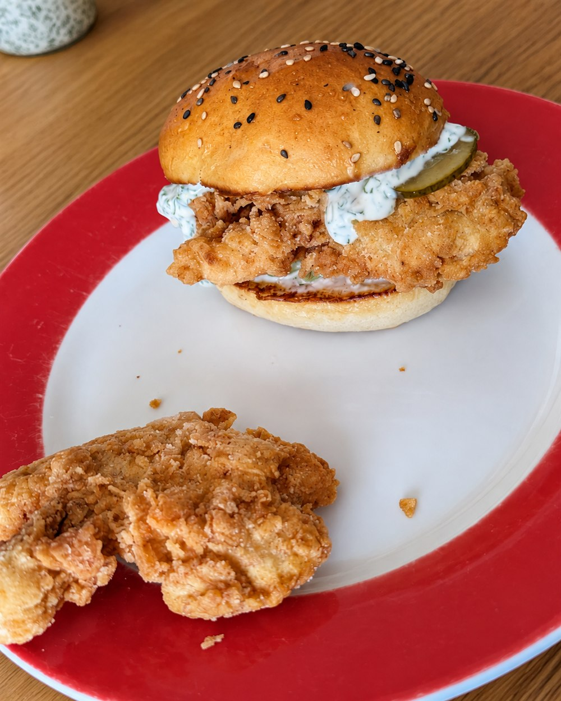

Snackungsdienst.
Unter diesem Namen wächst das Projekt. Mit einer Portion Humor und der Idee, später gegen Hunger anzutreten.

SNACKUNGSDIENSTGROSSE PLÄNE. GUTER HUNGER.EINSATZVORBEREITUNG LÄUFT
Ich bin Fabian. Jetzt bringe ich den Snackungsdienst auf den Weg: mit einem eigenen Konzept, vielen Kochversuchen und dem Ziel, meinen Foodtruck aufzubauen.
Die Richtung: Fried Chicken, Burger & Pommes.
Noch kein Verkauf. Noch kein Starttermin. Aber schon eine Menge vor.

Das Konzept steht. Jetzt geht’s an die nächsten Schritte.
01 DIE IDEE DAHINTER
„Ich möchte einen Foodtruck aufbauen. Einen, hinter dem meine eigenen Ideen und viele Versuche in der Küche stehen. Hier nehme ich dich mit auf dem Weg dahin.“
Unter diesem Namen wächst das Projekt. Mit einer Portion Humor und der Idee, später gegen Hunger anzutreten.
So wird mein Foodtruck heißen. Bis er losrollen kann, gibt es noch einiges zu planen und vorzubereiten.
Viele Kochversuche und ein eigenes Konzept sind die Grundlage. An den Rezepten und der späteren Karte arbeite ich weiter.
02 EINBLICKE AUS DER KÜCHE
Eigene Kochversuche. Erste Ideen.
Und noch einiges auf dem Zettel.

ERSTE KOCHVERSUCHEEin Burger aus meinen ersten Versuchen. Hier wird getestet, bevor eine fertige Karte daraus wird.
Viele Kochversuche, Rezeptentwicklung und ein eigenes Konzept: Darauf baue ich jetzt auf. Küchen und Hygienekurse habe ich angefragt. Für den Trailer kläre ich gerade, welche Ausstattung ich brauche.
WAS ALS NÄCHSTES ANSTEHT
Der Snackungswagen
entsteht gerade.
Die Fotos zeigen meine Kochversuche – die spätere Speisekarte steht noch nicht fest.
03 / BLEIB DABEI
Wenn es etwas Neues gibt, teile ich es hier und auf Instagram. Von der nächsten Runde in der Küche bis zu den Fortschritten beim Aufbau.
04 / AUSTAUSCH & KONTAKTE
Gerade nutze ich meine Zeit in Berlin, um dazuzulernen, Kontakte zu knüpfen und den Snackungswagen vorzubereiten. Wo er später unterwegs sein wird, steht noch nicht fest.
Ich freue mich über Austausch, Erfahrungen und Angebote – von Testküchen und Foodtrailern über Lieferanten bis zu Partnerschaften und Eventideen. Auch mit Fragen oder anderen Ideen bist du willkommen.
Schreib mir eine E-Mailinfo@snackungsdienst.deDas Projekt ist im Aufbau. Es gibt noch keinen Verkauf und keine bestätigten Einsatztermine.